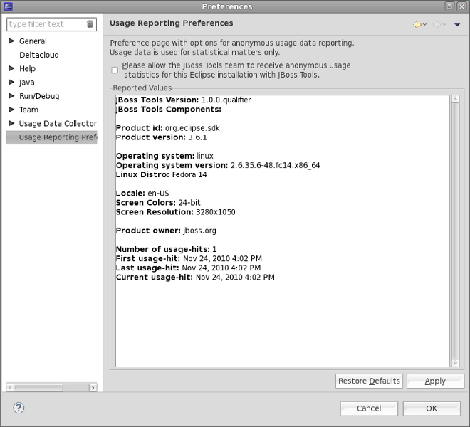
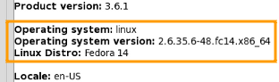
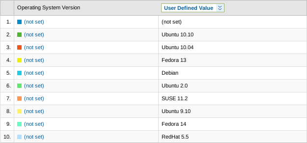
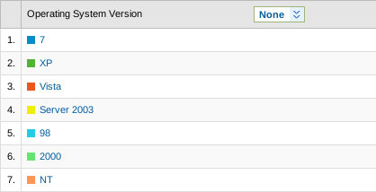

General
|
| Preferences |
We now show to the user what we collect in the preferences. This leads to even more transparency
and clearly demonstrates that we track installation- and usage-patterns. The statistics allow us to enhance the user experience.

Related Jira
|
|
| Operating systems |
Usage Reporting now reports linux distributions and versions. Earlier versions could not report any linux specific OS details.


Related Jira
Usage Reporting could not distinguish the various windows versions. It can now report all major windows variants.

Related Jira
|
|
| Various bugs |
Usage Reporting was rather verbose and created an entry to the log when the internet connection was not available. Beta2 now only logs if debug/tracing is enabled.
Related Jira
|